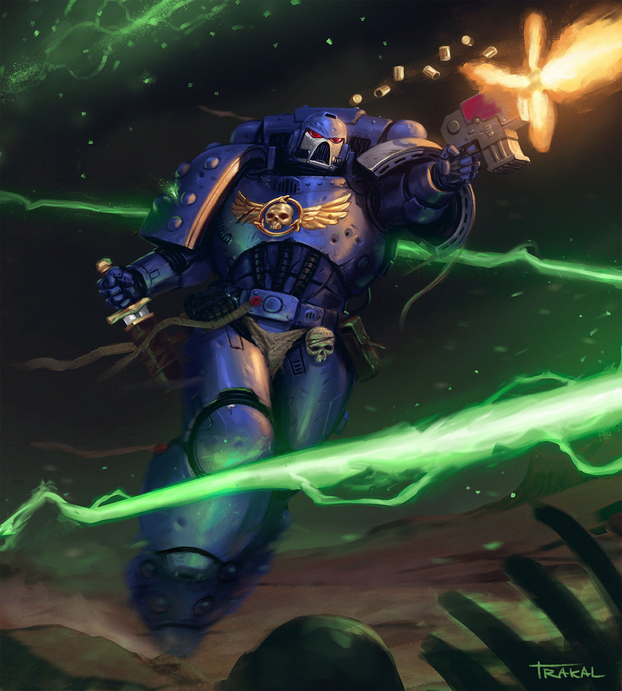
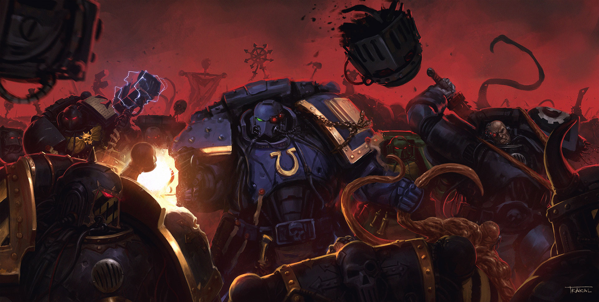
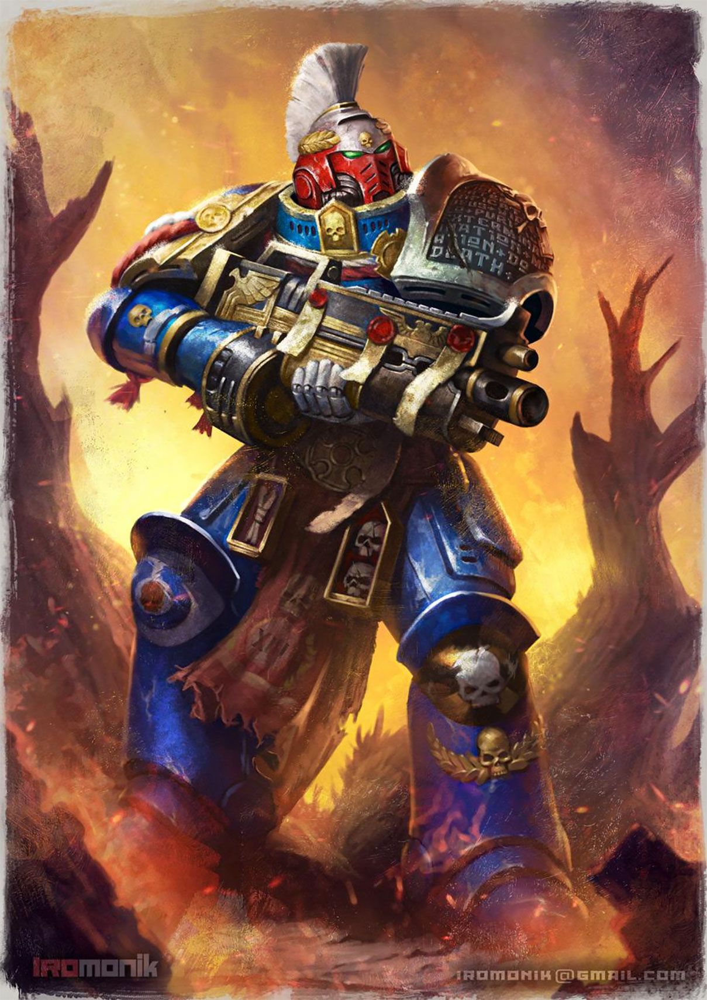
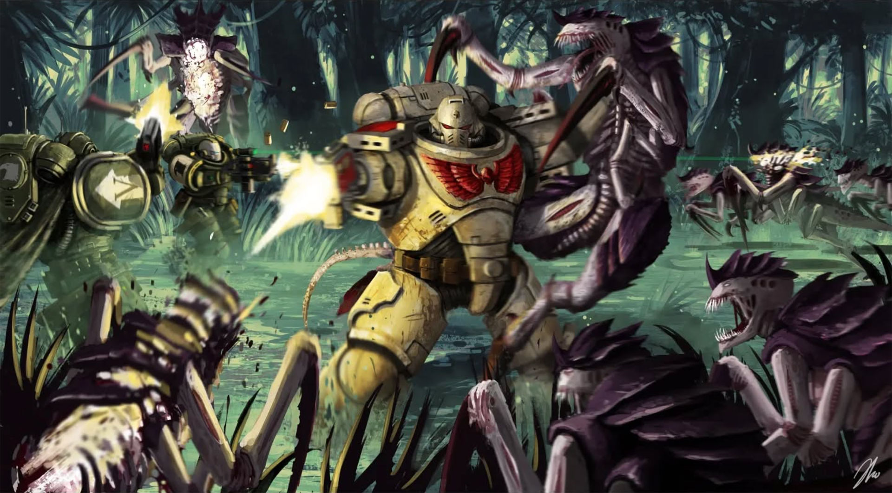
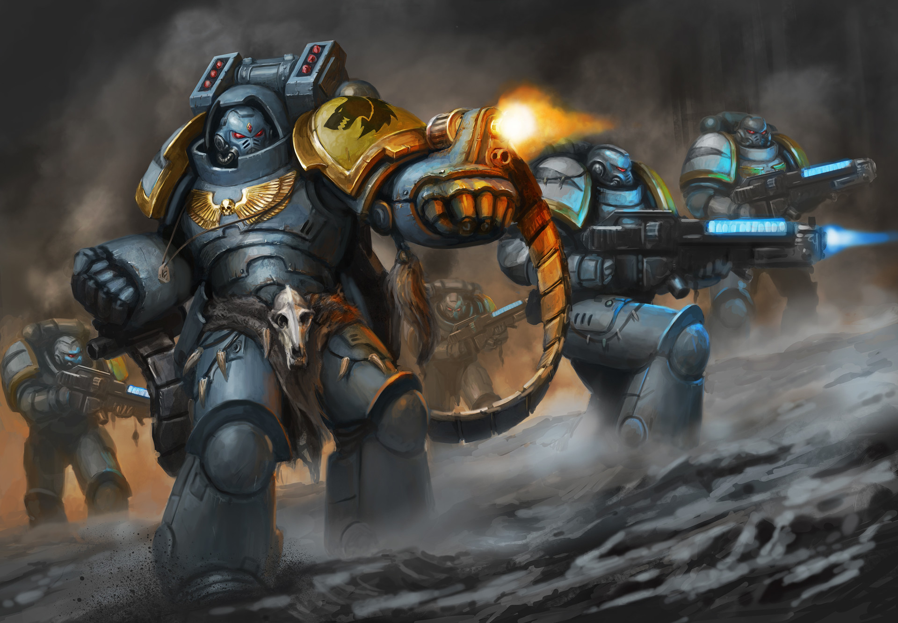
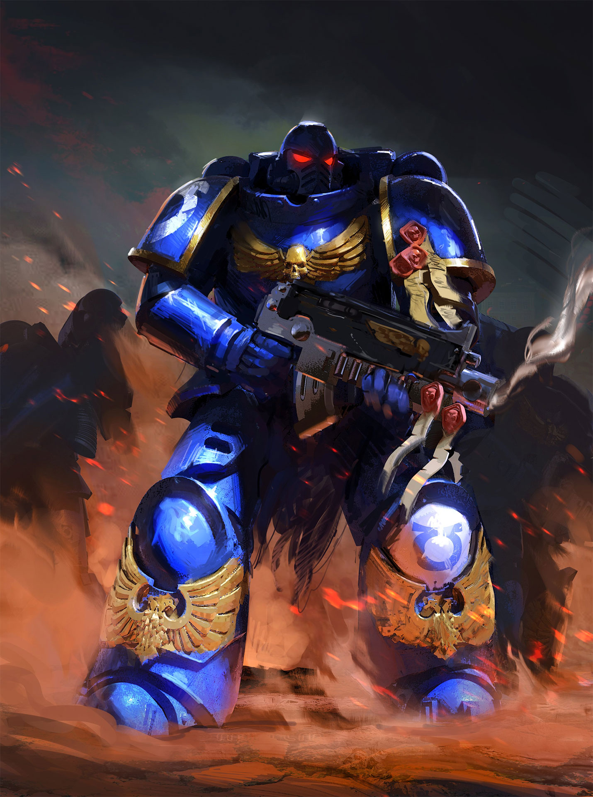
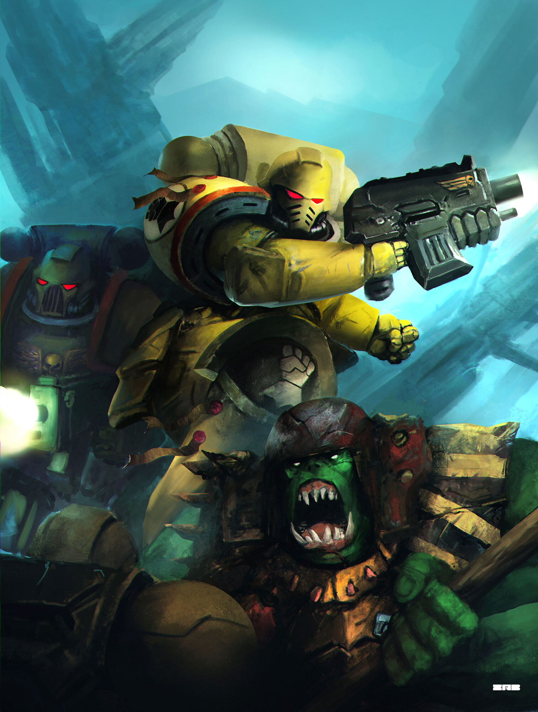
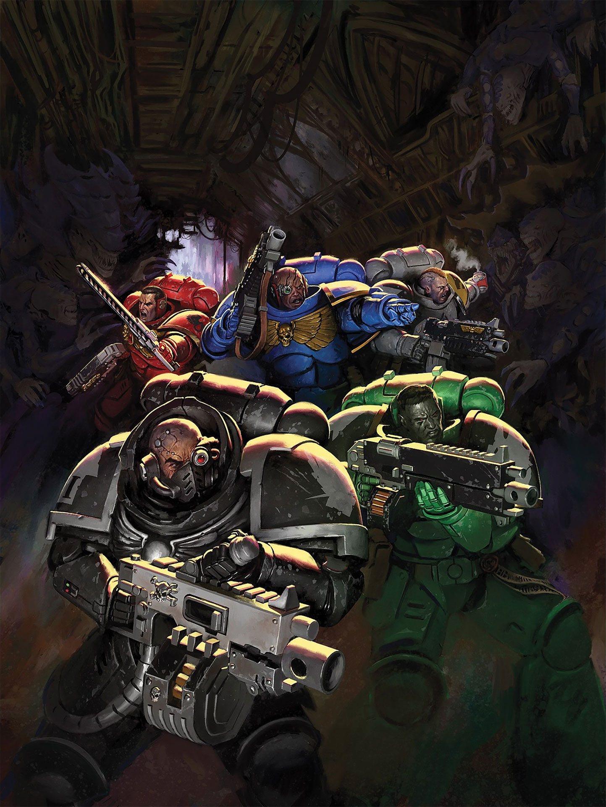
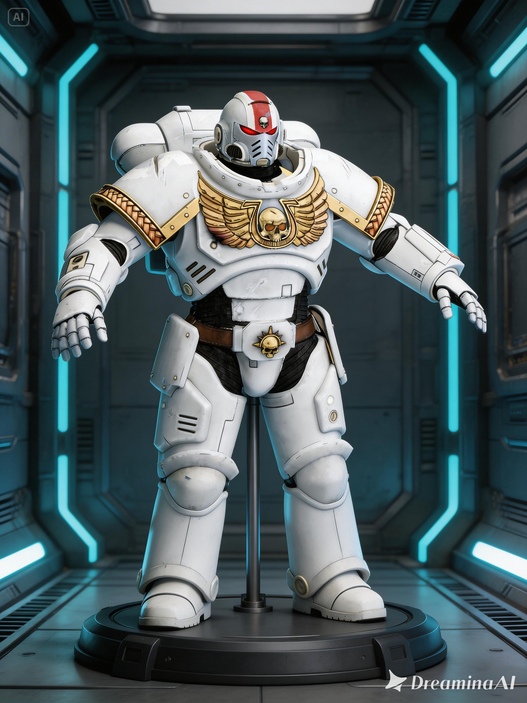

O ÉDITO IMPERIAL: LORE
Há mais de dez milênios, o Imperador senta-se imóvel no Trono Dourado de Terra. Ele é o Mestre da Humanidade por vontade dos deuses e mestre de um milhão de mundos pelo poder de Seus exércitos inesgotáveis. O Império é um regime vasto e cruel, mantido pela fé fervorosa e pelo sacrifício de trilhões. Em uma galáxia consumida por horrores alienígenas e corrupção demoníaca, a humanidade não luta mais por progresso ou iluminação, mas pela pura e simples sobrevivência. Cada guerra travada, cada planeta purificado e cada gota de sangue derramada servem a um único propósito: adiar o inevitável fim da espécie humana perante as trevas do universo.
OS DEFENSORES DE TERRA

Primaris Intercessor

Hellblaster

Inceptor

Aggressor

Terminator

Primaris Lieutenant

Infiltrator

Kill Team / Sternguard Veteran
O ARSENAL: DIVERSIDADE DE FOGO

O arsenal de um Capítulo de Space Marines é uma coleção de relíquias tecnológicas e instrumentos
de destruição em massa. No coração desta armaria está o Boltgun, uma arma que dispara granadas
autopropelidas de 75mm, mas a maestria tática dos Astartes vai muito além:
• Armas de Longo Alcance e Assalto: De variantes compactas de Bolters para
combate urbano a rifles de precisão e canhões de plasma que brilham com a energia de uma estrela
contida, cada disparo é calculado para a aniquilação total.
• O Terror do Combate Próximo: Para quando o inimigo está a poucos metros,
os guerreiros empunham Chainswords (espadas-serra) cujos dentes rugem ao morder armaduras, além
de espadas de energia (Power Swords) que cortam matéria no nível atômico.
• Relíquias de Destruição: O arsenal inclui martelos de trovão capazes de
esmagar tanques com um único golpe e armas de fusão (Melta) que transformam bunkers em poças de
metal derretido.
Cada arma é santificada por sacerdotes rúnicos, pois no 41º milênio, a manutenção do
equipamento é um rito religioso e a falha de uma arma é considerada uma traição ao Imperador.
A DEFESA: A MURALHA DE CERITE

A Power Armor (Armadura de Poder) é mais do que uma proteção; é um sistema de suporte à vida completo que transforma um Space Marine em um tanque andante. Construída com placas espessas de Cerite e alimentada por um reator dorsal, ela é conectada diretamente ao sistema nervoso do guerreiro através do 'Black Carapace'. Essa armadura permite que o usuário ignore ferimentos mortais, sobreviva ao vácuo do espaço e mova-se com uma agilidade impossível para o seu tamanho. Enquanto um soldado comum confia na sorte, um Astartes confia na sua armadura para ser o escudo inquebrável da humanidade.